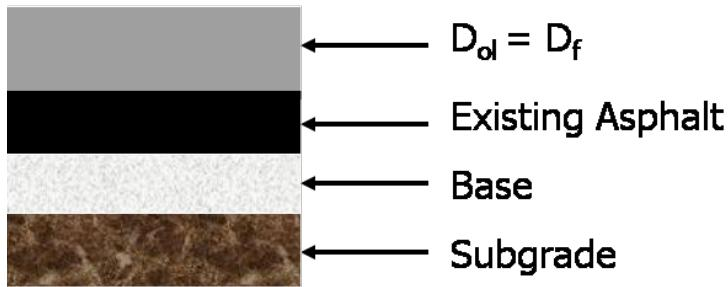
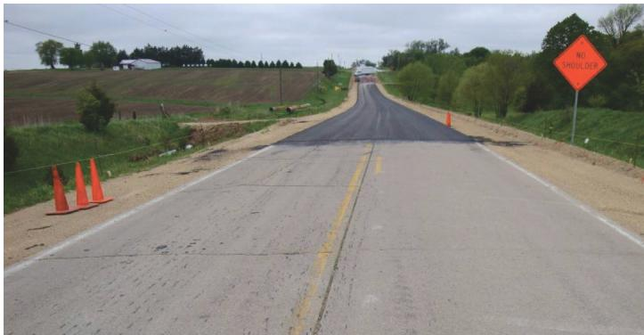
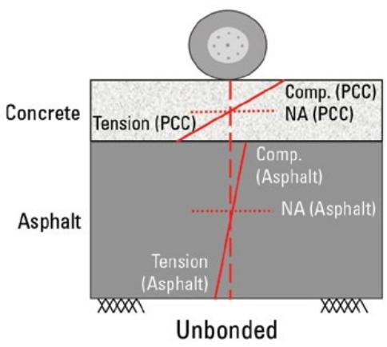
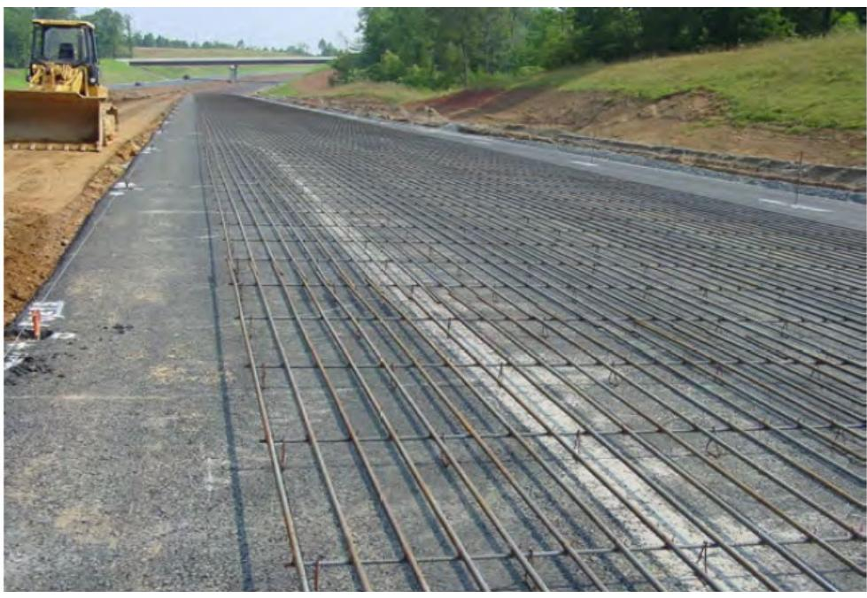
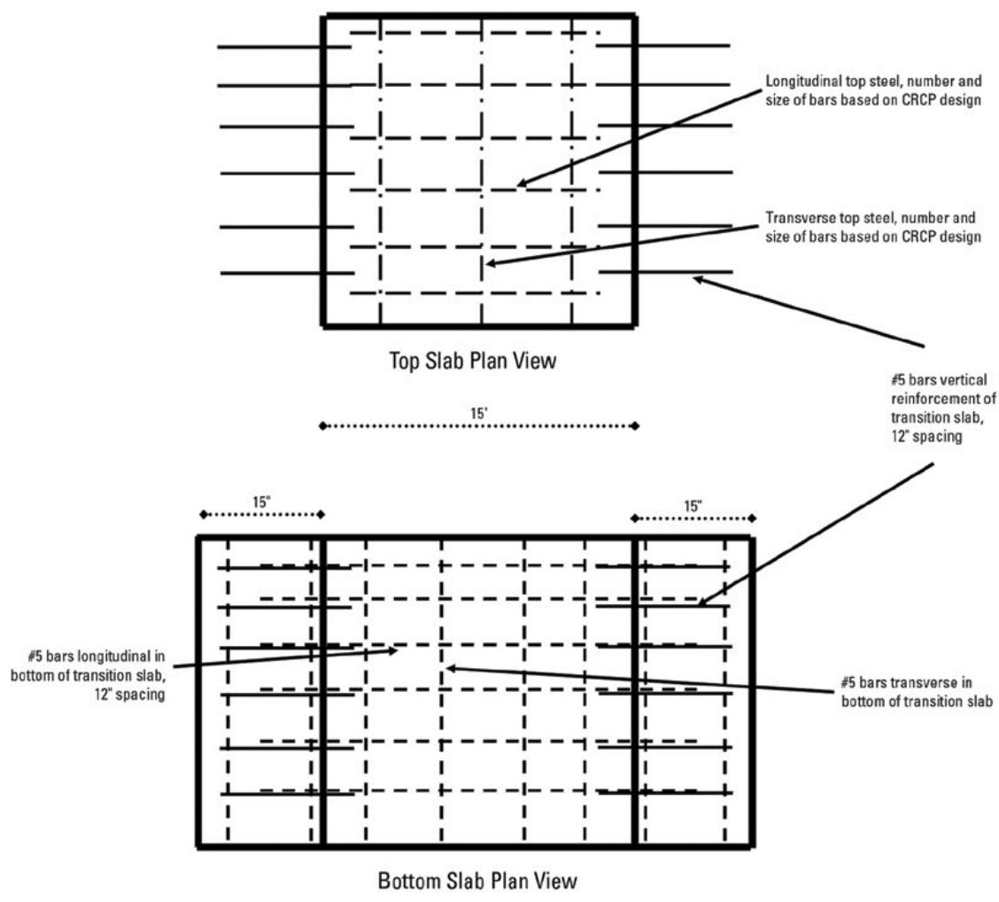
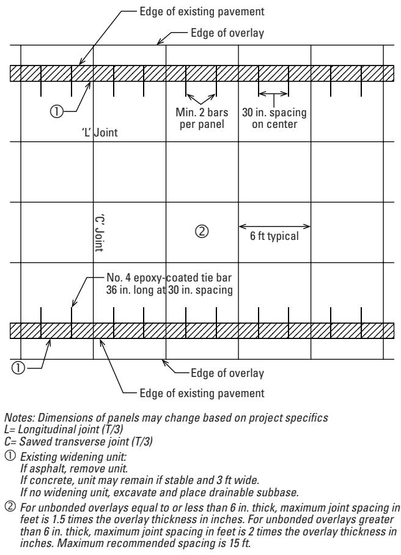
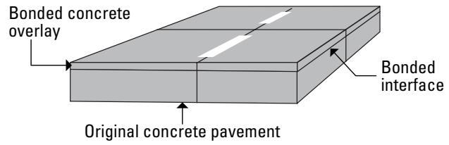

CRCP Material Properties and Structural Design
CRCP material properties and structural design address the tendency of conventional concrete pavements to develop uncontrolled transverse cracks by eliminating transverse contraction joints and relying on a high proportion of longitudinal reinforcement (≈0.6–0.8 % of slab cross‑section) to force cracks into regular, tightly closed spacings that preserve aggregate interlock and load transfer [1][3][4]. The design integrates functional, structural, durability, safety and serviceability goals—providing a thinner, low‑maintenance overlay with an asphalt separation layer, prescribed construction joints only, and reinforcement layouts (e.g., #6 bars at 7 5/8 in.) determined through mechanistic‑empirical analysis such as AASHTOWare Pavement ME Design [1][4]. By meeting these criteria the CRCP system delivers a long‑service‑life (20–40 yr), smooth ride (IRI ≈70 in/mi) and resistance to punchout and shrinkage cracking on high‑traffic corridors [1][4].
Sources (4)
Purpose and design objectives
The engineering problem addressed by CRCP material properties and structural design is the tendency of conventional concrete pavements to develop uncontrolled transverse cracks due to shrinkage, temperature fluctuations, and joint deterioration, which compromises load transfer and requires frequent maintenance. By eliminating transverse contraction joints and relying on a high percentage of longitudinal reinforcement, the design forces cracks to form at regular, acceptable spacings and keeps them tightly closed so that aggregate interlock can continue to carry traffic loads throughout the pavement’s service life. This approach also meets the performance need for rehabilitating existing rigid pavements—providing a durable, structurally adequate concrete layer that controls cracking while delivering long‑lasting, low‑maintenance service under heavy traffic. [1][3][4]
The following figure illustrates the transverse and diagonal cracking patterns that occur in concrete pavements.
 Transverse and diagonal cracking in concrete pavements [3]
Transverse and diagonal cracking in concrete pavements [3]
The image displays a longitudinal view of a gray concrete pavement surface featuring a prominent, irregular crack running vertically through the center. This visual evidence illustrates transverse cracking, which is defined as a fracture oriented laterally across the pavement and perpendicular to the pavement centerline.
[1] — Ch. 3 (p. 52); [3] — Ch. 1 (p. 28); [4] — Ch. 3 (p. 32), App. A (pp. 101–108), App. B (pp. 113–121)
The design of an unbonded CRCP overlay must satisfy intertwined functional, structural, durability, safety and serviceability objectives. Functionally it is required to extend pavement life and deliver a smoother ride while allowing a thinner slab than comparable jointed plain concrete sections. Structurally the slab must behave as a crack‑controlled system that operates without transverse joints; sufficient longitudinal reinforcement—approximately 0.6 % to 0.8 % of the cross‑section—is needed to limit transverse cracks to about 3–8 ft spacing and keep them tightly closed so aggregate interlock can transfer loads throughout the design life, and thickness is to be determined with AASHTOWare Pavement ME Design using only the prescribed transverse construction joints and longitudinal construction‑and‑contraction joints. Durability objectives call for a constant low International Roughness Index, resistance to shrinkage cracking through appropriate mix design, and inclusion of a stripping‑resistant asphalt separator together with adequate subsurface drainage. Safety is achieved by limiting punchout failures through proper steel reinforcement, tie‑bar placement and joint spacing, while serviceability is enhanced by maintaining low IRI values and providing terminal‑joint treatments that are easy to construct and require minimal upkeep, with sleeper‑slab transition systems preferred. [1][4]
The figure below illustrates the distinction between bonded and unbonded overlays of existing concrete pavements.
 Schematic cross-section of an unbonded concrete overlay over existing pavement. [4]
Schematic cross-section of an unbonded concrete overlay over existing pavement. [4]
The figure displays a three-dimensional block diagram illustrating the layered structure of a Concrete Overlay on Concrete (COC-U) system, consisting of an upper ‘Unbonded concrete overlay’ and a lower ‘Existing concrete pavement’. A distinct separation layer is shown between the two concrete slabs, which the source context identifies as being designed to provide isolation, bedding, and/or drainage. This figure illustrates the physical configuration of a rehabilitation technique that can be applied to Continuously Reinforced Concrete Pavement (CRCP), serving as the structural basis for the unbonded overlay design discussed in the concept.
[1] — Ch. 3 (p. 52); [4] — Ch. 3 (p. 32), App. B (pp. 113–121)
Scope and applicability
The guides describe CRCP material‑properties and structural design as appropriate for unbonded continuously reinforced concrete pavement overlays placed over existing pavements—both concrete decks (jointed plain, jointed reinforced, or earlier CRCP sections) and asphalt‑surfaced decks that are in adequate condition. It is intended for full‑depth concrete pavements where designers wish to eliminate transverse contraction joints, as “CRCP is a type of concrete pavement that does not require any transverse contraction joints.” The design eliminates traditional transverse joints; indeed “CRCP is designed without transverse joints,” and relies on longitudinal reinforcement “typically 0.6 to 0.8 percent of the cross‑sectional area of the slab” to limit transverse cracking to spacings “about 3 to 8 ft apart,” while “Transverse cracks are expected in the slab, usually at intervals of 1.5 to 6 feet.” The overlay thickness is commonly “8.0 in. thick” or “9.5 in. thick,” with overall slab thickness ranging from six to twelve inches as dictated by wheel‑path, crown, cross‑slope, or grade requirements; “The thickness of the overlay is determined based on the structural design process.” Reinforcing steel is provided at roughly 0.7 % of concrete volume: “The overlay requires a variable amount of reinforcing steel, approximately 0.7%,” and typical bar sizes are “0.75 in. diameter (#6) bars spaced at 7 ⅞ in.” longitudinally and “0.5 in. diameter (#4) bars spaced at 48 in.” transversely. An asphalt separation layer is required; “Asphalt separation layers are typically used to ensure reliable crack spacing development in the overlay,” and “An unbonded CRCP overlay requires the application of a separation layer similar to that used for a conventional COC–U overlay.” The only joints needed are construction joints: “The only overlay joints that are required are transverse construction joints and longitudinal construction and contraction joints.”
Project conditions favor high‑traffic, heavy‑load corridors. “Some agencies use CRCP designs for high‑traffic urban routes because of their suitability for heavy traffic loads and long, relatively maintenance‑free, service life,” and “For this reason, roadways with higher traffic volumes, such as an annual average daily truck traffic (AADTT) of 33,000, are ideal candidates for CRCP overlays.” Major principal arterials that can accommodate slab thicknesses of six to twelve inches are especially suitable. The approach has been widely applied in the United States: “Unbonded CRCP overlays on concrete pavement have been (and continue to be) constructed in the US,” and “The majority of CRCP overlays have been and continue to be unbonded overlays on existing concrete pavements, with limited applications …” Limited but viable use exists for “unbonded CRCP overlays on asphalt‑surfaced pavement” and for “thin and ultrathin CRCP overlays on flexible pavements in transition areas.” Design can be performed using the 1993 AASHTO Guide or “Thickness design for unbonded CRCP overlays should be performed using AASHTOWare Pavement ME Design.” [1][2][3][4]
The following figure illustrates the predicted longitudinal transfer efficiency for an 8.0-inch unbonded CRCP overlay using AASHTOWare Pavement ME Design.
 Predicted Load Transfer Efficiency over Pavement Age for an Unbonded CRCP Overlay. [2]
Predicted Load Transfer Efficiency over Pavement Age for an Unbonded CRCP Overlay. [2]
The graph illustrates a gradual decline in efficiency over the design life, characterized by seasonal oscillations that become more pronounced as the pavement ages.
[1] — Ch. 3 (p. 52); [2] — 1. Introduction (p. 63); [3] — Ch. 1 (p. 28); [4] — Ch. 3 (pp. 32–33), Ch. 7 (p. 78), App. A (pp. 101–108), App. B (pp. 113–121)
Because unbonded CRCP overlays have been constructed only sporadically in recent decades—primarily as thin or ultrathin sections in transition zones—practitioners tend to select alternative overlay designs for most other pavement situations, especially where thicker or standard‑thickness concrete layers are required. Bonded CRCP overlays on concrete pavement are usually economically viable only when very little pre‑overlay repair is required; when extensive deterioration or significant patching is needed, a jointed concrete overlay or another rehabilitation method becomes more appropriate. A CRCP overlay of an existing asphalt‑surfaced pavement can be a viable design alternative, assuming that (1) the existing structure is in adequate condition and will provide a strong, stable base for the overlay and (2) a non‑erodible asphalt layer is directly beneath the overlay; if either condition is not met, designers typically turn to another overlay type. When the underlying surface is jointed plain concrete or CRCP, an unbonded CRCP overlay with an asphalt separation layer is only chosen if modest repairs are feasible and subsurface drainage can be corrected without excessive cost; however, if the needed patching exceeds roughly five percent of the pavement or the existing concrete shows material‑related problems such as alkali‑silica reaction, D‑cracking, or freeze‑thaw damage, a different pre‑overlay treatment—typically rubblization—or another design approach becomes preferable. [4]
[4] — Ch. 3 (p. 33), App. A (p. 108), App. B (pp. 114–121)
Design inputs and requirements
The design of unbonded CRCP overlays is governed by agency‑specific cross‑section standards and national pavement design guides, and more broadly by a hierarchy of federal‑state specifications, performance criteria, and project constraints. Agency standards such as the Illinois Department of Transportation (IDOT) standard detail define an allowable thickness range of 7.75 – 8.5 in., prescribe longitudinal reinforcement of #6 bars spaced at 7 5/8 in. (≈19 bars per lane) with a steel depth of 3.5 in., and provide transverse reinforcement (#4 bars at 48 in.) that is not required as an input. Nationally, the 1993 AASHTO Guide and the AASHTO Pavement ME Design Guide set permissible overlay thicknesses (e.g., 8.0 in. or 9.5 in.) and overall performance criteria that must be met through mix design and surface preparation, with all other CRCP design inputs taken from the default values supplied by AASHTOWare Pavement ME Design. The structural thickness of both unbonded and bonded overlays must be determined through AASHTOWare Pavement ME Design, as mandated by the Continuously Reinforced Concrete Pavement Manual and any project‑specific Appendix B. An asphalt separation layer—typically 2 to 3 in. of dense‑graded concrete—is required beneath the CRCP slab and follows the same requirements used for conventional COC‑U overlays. Reinforcing steel content is limited to approximately 0.7 % (0.6 %–0.8 %) and is provided with No. 5‑7 bars (tie‑bars No. 5‑6) while maintaining a minimum two‑inch bottom cover. Joint detailing follows the COC‑U guidance: only transverse construction joints, longitudinal construction or contraction joints, and matched repair joints for bonded overlays are permitted; saw‑cut depths and widths must match those prescribed for COC‑U (or COC‑B) overlays, with terminal joints using sleeper slabs rather than lugs or wide‑flange beams. Overlay thickness historically ranges from six to nine inches, but designs may extend to twelve inches when justified; bonded CRCP overlays are limited to three to four inches and require the underlying concrete pavement to be in very good condition. Project constraints include a satisfactory condition assessment of the existing pavement—per Chapter 2 of this guide and NCHRP Synthesis 388—to determine whether pre‑overlay repairs or rubblization (required when patching exceeds roughly five percent) are needed, as well as a stable non‑erodible asphalt base, edge support via tied shoulders, and risk‑allocation provisions for volume overruns. Performance requirements call for a service life of 20–40 years, an International Roughness Index near 70 in/mi, and the capacity to accommodate high truck volumes (≈33 000 AADTT). [2][4]
The following figure illustrates an unbonded overlay on existing asphalt pavement.

Illustration of Unbonded Overlay of Existing Asphalt Pavement. [2]The figure depicts a cross-section of an unbonded pavement overlay system consisting of four distinct layers: a top concrete slab, existing asphalt, a base layer, and the subgrade.
[2] — 1. Introduction (pp. 60–63); [4] — Ch. 3 (p. 32), Ch. 7 (p. 78), App. A (pp. 101–108), App. B (pp. 113–119)
Design methods and criteria
The structural design of unbonded and bonded CRCP overlays follows a mechanistic‑empirical workflow centered on AASHTOWare Pavement ME Design. The process begins with “Step 4. Input CRCP Design Properties” where material and reinforcement characteristics are entered on the CRCP Design Properties screen. Overlay thickness is selected through the software – for example, “An overlay 8.0 in. thick with asphalt shoulders was determined using the AASHTOWare Pavement ME Design Guide,” while a comparable thickness can also be referenced from the older method: “A CRCP overlay 9.5 in. thick with asphalt shoulders was determined for this example using the 1993 AASHTO Guide.”
Reinforcement is sized to agency standards; the guides specify “#6 bars spaced at 7 5/8 in.” for longitudinal steel and “#4 bars spaced at 48 in.” for transverse steel, with a “depth to steel bar reinforcement for this example is 3.5 in.” Steel content in CRCP overlays should match conventional values of “0.6% to 0.8%” and the model is noted as “sensitive to certain design inputs, such as steel content, slab‑base friction, and thermal/drying shrinkage.” Default parameters are used unless project‑specific data are supplied: “Default values in AASHTOWare Pavement ME Design are used.”
Jointing requirements are limited to the essential joints. For unbonded systems the guides state that “The only overlay joints that are required are transverse construction joints and longitudinal construction and contraction joints” with saw‑cut dimensions identical to those for COC‑U overlays: “Sawcut depths and widths for longitudinal contraction joints in unbonded CRCP overlays are identical to those described previously for COC–U overlays.” Bonded overlays follow the same thickness design procedure but also require matched repair joints and longitudinal construction joints, with saw‑cut details matching conventional COC‑B overlays.
An asphalt separation layer is typically incorporated in unbonded overlays: “Asphalt separation layers are typically used to ensure reliable crack spacing development in the overlay.” Edge support provisions such as tied concrete shoulders and tie‑bar placement limits are modeled within the software. After structural parameters are finalized, the next steps are mix design development and surface‑preparation specifications: “At this point in the overlay design process, the next steps are conducting mix designs and assembling surface preparation specifications.” [2][4]
The following figure illustrates the application of an asphalt separation layer to existing concrete pavement for unbonded concrete overlays.

Application of Asphalt Separation Layer to Existing Concrete Pavement for Unbonded Concrete Overlay. [2]The image displays a rural highway undergoing rehabilitation, where the existing concrete pavement is visible in the foreground and fresh asphalt has been applied further up the road. Orange traffic cones line the shoulder to manage construction access while the overlay work proceeds.
[2] — 1. Introduction (pp. 60–63); [4] — Ch. 3 (p. 32), App. A (pp. 101–108), App. B (p. 119)
The design of unbonded continuously reinforced concrete pavement (CRCP) overlays must meet a set of material, structural and performance criteria that ensure a 20‑40 year reliable service life. The guides assume the slab will be built without transverse joints except for construction or terminal joints that isolate structures, and they limit jointing to transverse construction joints and longitudinal construction/contraction joints; saw‑cut depth at the slab edge shall be one‑third of the slab thickness (T/3) while maintaining at least 2 in bottom cover. Reinforcement is specified as a longitudinal reinforcement ratio of roughly 0.6 to 0.8 % of the slab’s cross‑sectional area, which limits transverse cracking to an acceptable spacing of about three to eight feet and keeps cracks tightly closed. Longitudinal steel is typically provided by #6 (0.75 in.) bars spaced at 7 5⁄8 in. (≈19 bars per lane) placed 3.5 in. below the surface; transverse reinforcement consists of #4 (0.5 in.) bars at 48‑in. centers, used only to support the longitudinal steel during construction.
Thickness requirements are defined by agency specifications and mechanistic‑empirical analysis using AASHTOWare Pavement ME Design. Minimum slab thickness is six inches, with typical designs ranging from eight to twelve inches; a 9.5‑inch section follows the 1993 AASHTO Guide, an 8.0‑inch section applies when using the AASHTOWare methodology, and many jurisdictions limit CRCP overlay thickness to roughly 7¾–8½ in. The underlying concrete layer is assumed to have a Poisson’s ratio of 0.2 and an elastic modulus of 3 × 10⁶ psi.
A 2–3‑inch dense‑graded asphalt concrete separation layer is required to provide a stripping‑resistant interface and to promote reliable crack spacing. Edge support is treated as critical: a tied concrete shoulder with tie bars No. 5 or No. 6 spaced no more than 20 ft apart and placed at least 18 in from any shoulder contraction joint.
Design assumptions include an adequate existing base, a non‑erodible asphalt layer beneath the overlay, sufficient slab‑base friction to prevent punch‑out, controlled thermal/drying shrinkage, and effective subsurface drainage. Applicability thresholds target roadways with annual average daily truck traffic of about 33 000 trucks per day and an in‑service IRI near 70 in/mi; if repairs exceed roughly five percent of the surface, rubblization of the existing concrete is recommended before overlay placement.
Collectively these criteria satisfy the required factors of safety and reliability for unbonded CRCP overlays. [1][2][4]
The figure below illustrates the behavior and flexural stress distribution through the layers of these bonded and unbonded overlay systems.

Flexural stress distribution through the layers of an unbonded overlay system. [4]The figure illustrates the flexural stress distribution within a composite pavement structure consisting of a concrete layer overlying an asphalt layer, labeled as ‘Unbonded’. It depicts how neutral axes (NA) and tension/compression zones are established in both the PCC and Asphalt layers under a wheel load.
[1] — Ch. 3 (p. 52); [2] — 1. Introduction (pp. 60–63); [4] — Ch. 3 (p. 32), Ch. 7 (p. 78), App. A (pp. 101–108), App. B (pp. 113–119)
Structural section and dimensions
The guides specify that an unbonded CRCP overlay slab is typically between 6 in. and 12 in. thick, with common practice in the 8‑to‑12 in. range. One design example calls for a slab thickness ranging from 7.75 in. to 8.5 in., and provides an alternative overlay thickness of 9.5 in. (1993 AASHTO Guide) or 8.0 in. (AASHTOWare Pavement ME Design) when asphalt shoulders are provided. Existing continuously reinforced concrete pavement is typically a seven‑inch thick slab.
For the supporting layers, an 8 in. thick CRCP overlay may be placed over a 5‑to‑8 in. asphalt concrete separation layer and a 14‑to‑28 in. aggregate subbase; existing pavement structures have included 12‑to‑16 in. of flexible base with a 3 in. asphalt concrete surface.
Reinforcement is defined by longitudinal #6 bars spaced at 7 5/8 in., transverse #4 bars spaced at 48 in., and a cover depth of 3.5 in. The overall steel content is targeted at 0.6 %–0.8 % using No. 5 to No. 7 bars. Tie‑bars used in concrete shoulders must be kept at least 18 in. from a shoulder contraction joint.
No explicit dimensional requirements are given for treated‑soil, edge‑support, or additional shoulder thickness beyond the reinforcement spacing rules. [2][4]
[2] — 1. Introduction (pp. 60–63); [4] — App. B (pp. 113–119)
Overlay thickness is obtained from AASHTOWare Pavement ME Design, which incorporates traffic, subgrade and material properties; because the existing pavement provides support, the resulting overlay is generally thinner than a new JPCP or CRCP. The steel reinforcement is kept at the conventional 0.6 %–0.8 %. An asphalt separation layer is placed between the existing pavement and the new concrete to promote consistent crack spacing. Joint layout follows a minimal‑joint philosophy: only transverse construction joints and longitudinal construction and contraction joints are provided, with saw‑cut dimensions matching those used in COC‑U overlays; joint spacing is limited to 20 ft to control transverse cracking. Edge support is achieved with a tied concrete shoulder using No. 5 or No. 6 tie bars placed at least 18 in from any shoulder contraction joint. Cross‑slope, transition slabs and terminal joints employ standard practice, with sleeper slabs preferred for terminal joints and transition slabs rather than lugs or wide‑flange beams. [4]
[4] — Ch. 3 (p. 32), App. B (p. 119)
Materials and mixture design
The required material package for an unbonded CRCP overlay includes the concrete slab itself, a longitudinal reinforcement system, transverse support steel, a dense‑graded asphalt concrete separation layer, and, where present, asphalt shoulders and tie‑bars for concrete shoulders. The design must specify that “longitudinal steel be provided at roughly six‑to‑eight hundredths of one percent of the slab’s cross‑sectional area” (the guides also note it “contains a significant amount of longitudinal reinforcement, typically 0.6 to 0.8 percent of the cross‑sectional area of the slab”). Transverse reinforcement is required for construction support, as stated: “Transverse reinforcement is also used to support the longitudinal steel during construction.”
Slab geometry and reinforcement layout are defined by a set of dimensional inputs: an “overall pavement thickness (typically a range of 7.75 – 8.5 in., with an eight‑inch example commonly used)” and a “depth to steel reinforcement (3.5 in.)”; longitudinal bars are described as “longitudinal #6 bars spaced at 7 5/8 in.” while transverse bars are “transverse #4 bars spaced at 48 in.”. Existing concrete layers must be characterized by their “thickness (7 in.), Poisson’s ratio (0.2), elastic modulus (3,000,000 psi), and thermal properties”.
The overlay also requires a “separation layer to isolate the new slab” that is “placed over a dense‑graded asphalt concrete separation layer two to three inches thick”. Reinforcing steel quantity for the new slab is expressed as “state the amount of reinforcing steel that will be placed in the concrete (typically around 0.7 % of the mix)” and, consistent with other guidance, as “steel content of 0.6 % to 0.8 % using No. 5‑7 bars”. The overall slab thickness is “prescribe[d] … as determined by the structural design calculations”, ranging from “overall slab thickness ranging from six to twelve inches (most often eight to twelve inches)”.
Tie‑bar provisions for concrete shoulders are detailed: “tie‑bar configuration for the concrete shoulder—limiting bar size to No. 5 or No. 6, keeping bars at least 18 inches from any shoulder contraction joint, and spacing joints no more than 20 ft apart”.
Mixture design inputs must be prepared, as required: “A concrete mix design together with surface preparation specifications must be prepared to define the mixture proportions.” The design also calls for performance‑related inputs such as “slab‑base friction values, thermal and drying shrinkage characteristics, and concrete mixture constituents that reduce transverse crack spalling while ensuring a stripping‑resistant separation layer and adequate subsurface drainage” (as required by AASHTOWare Pavement ME). [1][2][4]
[1] — Ch. 3 (p. 52); [2] — 1. Introduction (pp. 60–63); [4] — Ch. 7 (p. 78), App. B (pp. 115–119)
Thickness design for unbonded CRCP overlays should be performed using AASHTOWare Pavement ME Design. Once the required slab depth—typically in the 6–12 in. range and most often 8–12 in.—is established, a stripping‑resistant dense‑graded asphalt concrete separation layer (2 to 3 in. thick) is placed beneath the concrete to promote reliable crack spacing and protect the interface.
Reinforcing steel is proportioned to achieve “generally between 0.6 % and 0.8 % of the slab’s cross‑sectional area,” which aligns with the guidance that “the design steel content in CRCP overlays should be similar to that of conventional CRCP (i.e., 0.6% to 0.8%).” Longitudinal reinforcement typically uses No. 5 to No. 7 bars; examples specify #6 bars spaced at about 7 5/8 in. (≈19 bars per lane) placed 3.5 in. below the surface. Transverse reinforcement, such as #4 bars spaced at 48 in., is provided “to support the longitudinal steel during construction” and to achieve a “targeted crack spacing of roughly three to eight feet,” satisfying structural strength, durability against cracking, and load transfer.
The concrete mix design follows the established thickness and reinforcement inputs. Mix constituents—cement, aggregates, water, admixtures, and supplementary materials—are proportioned to meet required compressive strength, limit thermal and drying shrinkage, reduce slab‑base friction, and ensure constructability of joints and terminal connections. AASHTOWare Pavement ME Design is sensitive to inputs such as steel content, slab‑base friction, and thermal/drying shrinkage; therefore these parameters are carefully selected to control transverse crack development and crack width.
By integrating the thickness from ME Design, the prescribed separation layer, the specified reinforcement ratios and spacing, and a shrinkage‑controlled concrete mix, the material selection satisfies structural capacity, durability against punchouts and spalling, constructability of placement and jointing, and long‑term performance for unbonded CRCP overlays. [1][2][4]
The following figure illustrates the predicted punchout performance of this design configuration using AASHTOWare Pavement ME Design.
 AASHTOWare Pavement ME Design Predicted Punchouts Plot for 8.0 in. Unbonded CRCP Overlay. [2]
AASHTOWare Pavement ME Design Predicted Punchouts Plot for 8.0 in. Unbonded CRCP Overlay. [2]
The figure displays a graph plotting predicted punchout frequency against pavement age, comparing the performance of an unbonded CRCP overlay to a threshold value.
[1] — Ch. 3 (p. 52); [2] — 1. Introduction (pp. 60–63); [4] — Ch. 3 (p. 32), Ch. 7 (p. 78), App. B (pp. 115–119)
Structural details and interfaces
Across the guides, CRCP is designed without transverse joints; the only overlay joints that are required are transverse construction joints and longitudinal construction‑and‑contraction joints, which must be detailed specially when they isolate the slab from structures such as bridges. The pavement relies on a steel content of 0.6 %–0.8 % of the cross‑section, typically provided with No. 5–No. 7 (or #6) longitudinal bars spaced at about 7 5⁄8 in. on center and placed with roughly 3.5 in. cover. Controlled transverse cracking is expected at intervals of approximately 1½ ft to 8 ft, so no load‑transfer devices are needed. During construction, transverse reinforcement may be installed—commonly #4 bars on 48‑in. centers—to support the longitudinal steel, although it is not a mandatory input. In shoulder areas tie (or transverse) bars are limited to No. 5 or No. 6 size, spaced no more than 20 ft apart and located at least 18 in. from any shoulder contraction joint. An asphalt separation layer is placed beneath the overlay to promote reliable crack spacing. For terminal or end‑treatment locations, transition‑slab systems that employ sleeper slabs are preferred over lugs or wide‑flange beams, providing a low‑maintenance load‑transfer solution for bridge and JPCP connections. [1][2][3][4]
The figure below illustrates the concrete reinforcement details for CRCP.

CRCP reinforcement layout during construction [3]The image displays a roadway section prepared for concrete paving, featuring a dense grid of longitudinal steel bars supported by transverse ties. This reinforcement configuration is characteristic of continuously reinforced concrete pavements (CRCP), which utilize continuous longitudinal steel to control cracking without the need for contraction joints.
[1] — Ch. 3 (p. 52); [2] — 1. Introduction (pp. 60–63); [3] — Ch. 1 (p. 28); [4] — Ch. 3 (p. 32), Ch. 7 (p. 78), App. A (pp. 101–108), App. B (pp. 114–121)
CRCP is designed without transverse joints (transverse joints that do exist are either construction joints or terminal joints used to isolate the pavement from structures such as bridges; these require special attention). The guides state that interface design for CRCP overlays starts with a condition assessment of the existing pavement to decide whether a bonded or unbonded system is appropriate. When an unbonded overlay is selected, An unbonded CRCP overlay requires the application of a separation layer similar to that used for a conventional COC–U overlay. Jointing is minimized; The only overlay joints that are required are transverse construction joints and longitudinal construction and contraction joints. At terminal or transition locations, Sleeper slabs are preferred over lugs and wide‑flange beams for terminal joints and transition slabs. edge support is achieved with a tied concrete shoulder, ensuring tie bars are set back at least 18 in. from any shoulder contraction joint, limiting joint spacing to no more than 20 ft and using tie bars no larger than No. 5 or No. 6. [1][4]
The following figure illustrates the specific details for these transition slabs at terminal joints.

Transition slab details for the end treatment and terminal joints of a CRCP overlay. [4]The figure displays plan views of top and bottom reinforcement layers within a transition slab, detailing specific bar sizes and spacing configurations. The diagram specifies the use of #5 bars at 12-inch spacing for vertical and bottom slab reinforcement, demonstrating how specific reinforcement layouts are determined through design analysis.
[1] — Ch. 3 (p. 52); [4] — Ch. 3 (p. 32), Ch. 7 (p. 78), App. A (pp. 101–108), App. B (pp. 113–121)
Drainage, environment, and accessibility
Design of a CRCP overlay begins with a comprehensive evaluation of the existing pavement and mandates correction of any subsurface drainage problems before placement. The approach emphasizes that “subsurface drainage issues can be addressed cost‑effectively,” typically by installing a proper drainage layer beneath the slab to protect the foundation from erosion (“subsurface drainage to minimize foundation layer erosion”). When moisture‑related or climate‑induced distresses such as freeze‑thaw damage are identified, designers often elect to rubblize the existing concrete slab and place an asphalt separation layer prior to the new CRCP. In these cases “Rubblization may be an effective pre‑overlay treatment if the existing JPCP or CRCP exhibits materials‑related distresses such as alkali‑silica reaction, D‑cracking, or freeze‑thaw damage.” The concrete mix is selected to limit moisture‑driven transverse crack spalling and to accommodate thermal movements; consequently “AASHTOWare Pavement ME Design is sensitive to certain design inputs, such as steel content, slab‑base friction, and thermal/drying shrinkage,” which are calibrated to manage climate‑induced cracking while preserving smoothness. [4]
[4] — App. B (pp. 118–119)
The guides require CRCP overlays to be designed without transverse joints (“CRCP is designed without transverse joints”), and the design also “does not require any transverse contraction joints”, relying on controlled transverse cracking spaced at intervals that are “about 3 to 8 ft apart” (or “usually at intervals of 1.5 to 6 feet”). Longitudinal reinforcement is limited to “typically 0.6 to 0.8 percent of the cross‑sectional area of the slab”. Geometric provisions state that “The only overlay joints that are required are transverse construction joints and longitudinal construction and contraction joints; sawcut depths and widths for longitudinal contraction joints in unbonded CRCP overlays are identical to those described previously for COC‑U overlays.” Sawcuts at the pavement edge must be “the sawcut is T/3 at the pavement edge” and, when overlay thickness varies, “variable overlay thickness results in the need for variable-depth sawcuts at transverse joints”. Joint spacing may not exceed “the joint spacing should be limited to a maximum of 20 ft”, tie bars are restricted to “and the tie bar size should not exceed No. 5 or No. 6” and must remain “tie bars should not be placed within 18 in. of a shoulder contraction joint”. Edge support is achieved by a tied concrete shoulder, as “Edge support is very important for CRCP overlay performance, and therefore a tied concrete shoulder (CRCP or JPCP) is a preferred option”, and terminal joints are preferably provided with “Sleeper slabs are preferred over lugs and wide‑flange beams for terminal joints and transition slabs.” Thickness design must follow “Thickness design for unbonded CRCP overlays should be performed using AASHTOWare Pavement ME Design.” To promote reliable crack development, an asphalt separation layer is required because “reliable crack spacing is promoted by using asphalt separation layers”. Safety‑related controls also include the use of three‑dimensional roadway surveys: “use of three-dimensional roadway survey data … can also be used to reduce unexpected overruns”. The guides note that “No explicit accessibility criteria are provided in the guidance; therefore compliance focuses on the geometric and structural provisions that protect users and maintain pavement performance.” [1][3][4]
The following figure illustrates a plan view of the joint layout details for an unbonded CRCP overlay with widening.

Plan view joint layout detail for an unbonded overlay with widening. [4]The figure illustrates a plan view of a concrete pavement overlay, detailing the arrangement of longitudinal and transverse joints relative to existing pavement edges.
[1] — Ch. 3 (p. 52); [3] — Ch. 1 (p. 28); [4] — Ch. 3 (p. 32), App. A (pp. 101–108), App. B (p. 119)
Verification and expected performance
The completed CRCP overlay design should be verified against the requirement that the existing concrete pavement be in very good condition with limited distress, so that few or no pre‑overlay repairs are needed; the specified overlay thickness must fall within the typical 3‑to‑4 in range for bonded CRCP overlays; the design must ensure a reliable bond at the pavement‑overlay interface because inadequate bonding has been linked to delamination; and its expected performance should be cross‑checked with documented case histories that show satisfactory service when these conditions are met, confirming compliance, constructability, performance, and alignment with project goals. [4]
The figure below illustrates a typical CRCP overlay design that satisfies these verification criteria.

Schematic cross-section of a Concrete on Concrete-Bonded (COC-B) overlay system. [4]The figure displays a layered pavement structure consisting of an original concrete pavement base and a bonded concrete overlay placed directly on top. A distinct line labeled “Bonded interface” indicates the contact surface between the two layers, which is essential for the system to act monolithically. This figure illustrates the specific structural configuration of bonded concrete overlays used in CRCP rehabilitation, where the overlay thickness design directly considers the bond at the interface.
[4] — App. B (p. 118)
CRCP overlays are expected to deliver a markedly extended service life with only occasional maintenance, and to preserve a consistently low ride‑quality metric as reflected by the International Roughness Index (IRI). The unbonded CRCP overlay design anticipates a service life on the order of two to four decades while maintaining excellent structural condition and smooth ride quality; performance is tracked through periodic Condition Rating Surveys that assign a numerical condition rating, and roughness is quantified with the International Roughness Index, which for in‑service sections remains around 70 in/mi. Long‑term monitoring records years of operation—often exceeding two decades—and periodic IRI surveys verify that the pavement’s smoothness remains stable over time. The overlays have demonstrated resistance to distress by sustaining cumulative traffic volumes well beyond their design levels—often exceeding 150–200% of the 20‑year design traffic—without a decline to poor condition, and predictive models extrapolate that a “poor” rating would not be reached until roughly 35–40 years of service. Compared to JPCP overlays, CRCP overlays can provide a longer service life with greater smoothness and a thinner slab thickness, while resisting primary failure modes such as punchouts and limiting transverse crack development through appropriate steel content, slab‑base friction, thermal/drying shrinkage control, stripping‑resistant separation layers, and proper drainage. [4]
[4] — App. B (pp. 113–119)
References
- P. Taylor, T. Van Dam, L. Sutter, and G. Fick, "Integrated Materials and Construction Practices for Concrete Pavement: A State-of-the-Practice Manual," National Concrete Pavement Technology Center, Rep. Part of InTrans Project 13-482; TPF-5(286), 2019. [Online]. Available: https://www.cptechcenter.org/wp-content/uploads/2019/12/IMCP_manual.pdf
- H. N. Torres, J. Roesler, R. O. Rasmussen, and D. Harrington, "Guide to the Design of Concrete Overlays Using Existing Methodologies," National Concrete Pavement Technology Center, Rep. DTFH61-06-H-00011; Work Plan 13, 2012. [Online]. Available: https://www.cptechcenter.org/wp-content/uploads/2018/08/Overlays_Design_Guide_508.pdf
- D. Harrington, M. Ayers, T. Cackler, G. Fick, D. Schwartz, K. Smith, M. B. Snyder, and T. Van Dam, "Guide for Concrete Pavement Distress Assessments and Solutions: Identification, Causes, Prevention, and Repair," National Concrete Pavement Technology Center, 2018. [Online]. Available: https://www.cptechcenter.org/wp-content/uploads/2019/01/concrete_pvmt_distress_assessments_and_solutions_guide_w_cvr.pdf
- G. Fick, J. Gross, M. B. Snyder, D. Harrington, J. Roesler, and T. Cackler, "Guide to Concrete Overlays (Fourth Edition)," National Concrete Pavement Technology Center, 2021. [Online]. Available: https://www.cptechcenter.org/wp-content/uploads/2021/11/guide_to_concrete_overlays_4th_Ed_web.pdf